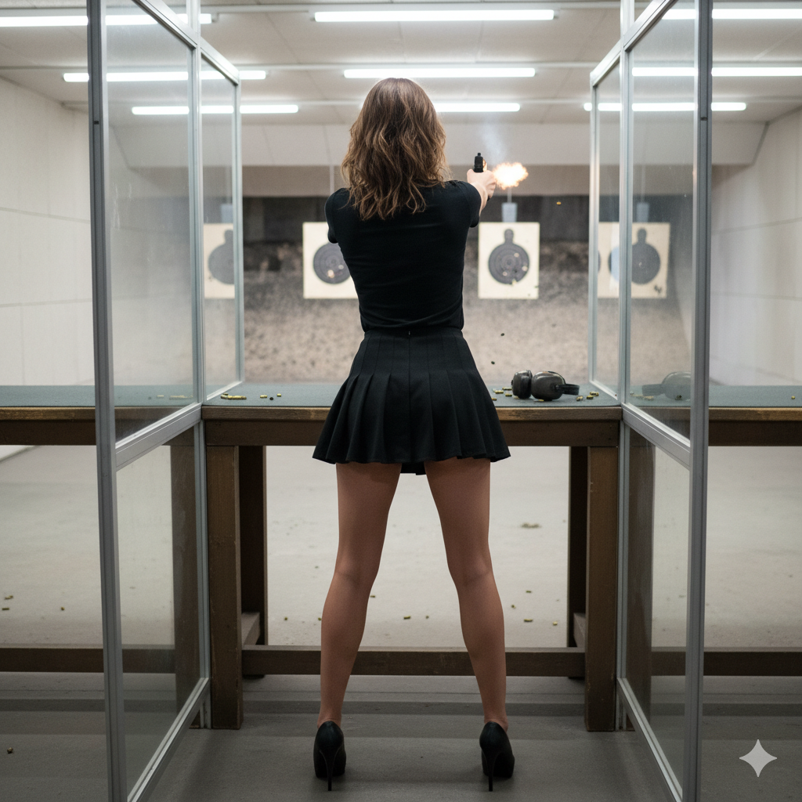

out shot

She walked in at 4 PM, wearing her usual trainers, a short skirt, a tight black T-shirt, and long red nails. Her hair was tied back in a ponytail, and her ear protection hung around her neck.
The shooting range smelled of gunpowder. It wasn’t big—only five lanes—with a table for scoring behind them and a bench along the opposite wall for visitors. Her junior club was gathered around the table in the 25m range, since the 50m precision range was out of order for now. She didn’t like 25m as much, but she was decent at it.
Her trainer was already waiting and got the other two set up. She was the most experienced shooter there that day. She grabbed her gun case and had her gun out in under a minute. She’d been shooting since she was twelve—different guns, different techniques. Today was supposed to be the usual .22mm, one-handed.
Everything at the 25m range was commanded. Her trainer said, “Today we’re doing five single shots, then three rounds of five shots in 50 seconds. Load one shot for the first single.”
She loaded as always—took the bullet, pointed it the right way, loaded it into the barrel, then pressed the button to close the slide. She stood hip-width apart, arm straight, the gun resting on the bench in her hand.
She loaded as always—took the bullet, pointed it the right way, loaded it into the barrel, then pressed the button to close the slide. She stood hip-width apart, arm straight, the gun resting on the bench in her hand.
When the other two were ready, the trainer called, “Ready?”
No one replied.
“Start”
The target turned away for seven seconds. She closed her eyes, inhaled deeply, then exhaled slowly. When she heard the target turn back, she opened her eyes, raised her arm, placed her finger on the trigger, lined up the sights, and slowly increased the pressure until the shot fired. Then she lowered her gun—all in five seconds.
The trainer called the target back.Bullseye. Perfect.
They repeated it five more times. She wasn’t as perfect, but still shot well.
Then they moved on to the timed shots.
This time, when the trainer said, “Load five shots,” she picked up her magazine, loaded five rounds, slid it into the gun, and closed the slide.
This time, when the trainer said, “Load five shots,” she picked up her magazine, loaded five rounds, slid it into the gun, and closed the slide.
“Ready?” he called, then, “Start.”
She raised her gun, lined up the sights, and applied pressure to the trigger. The shot fired. She didn’t lower her gun—just fired four more shots in 20 seconds. Then she lowered it and exhaled. The target came back—she had scored 42 out of 50 points.
At 4:30 PM, the adults’ club walked in. Her trainer said they’d move up to the two working lanes at the 50m range. Then he turned to her and hesitated.
“You’ve shot with 9mm before—not much, but want to stay down and practice?”
She nodded. She liked 9mm—more kickback, but just as accurate.
Her trainer and the other two went up to the 50m range while she stayed behind with two military guys taking their license test, and the adult trainer—whom she knew well. She didn’t know the military guys.
The trainer let her use his 9mm gun. They started the same routine, but this time she shot two-handed.
The military guys looked at her suspiciously, a little annoyed. An 18-year-old girly girl, short black skirt, long red nails—How the hell could she shoot? She understood their looks. To be honest, she was a bit unsure too. She wasn’t bad with a 9mm, but she’d only shot it a few times.
“Load one shot for the first of the single shots,” the trainer instructed. They did.
“Ready?”
Silence.
“Start.”
They raised their weapons, breathed, and fired. Then they lowered them. The scores were written down. No one could see each other’s scores, but she knew she was shooting well—for her standards. They repeated it five times.
Next came the series shots. These were harder than with the .22mm. The first round gave 50 seconds for five shots, then 40 seconds, and finally 30.
She loaded five shots into the magazine, slid it into the 9mm, and stood facing the target. When the trainer called, “Start,” she raised the gun, making sure her thumb was well out of the way of the slide. They fired, and the scores were written down.
She always loved the rhythm of shooting.
They did it two more times.
When the final scores were added and announced, the trainer was trying not to laugh.
When the final scores were added and announced, the trainer was trying not to laugh.
First place—with 168 points out of 200—was her.
Then one of the military guys with 152, and the other with 138.
She tried so hard not to let the devilish grin spread across her face. They had been beaten—by a girl five years their junior, with no military training, who looked like she was going to a party.
Their faces were painted with shock and a bit of anger.
Her trainers weren’t surprised at all. They were just proud she had taken the guys’ egos down a few pegs.
Best shooting lesson of her life.
back to home